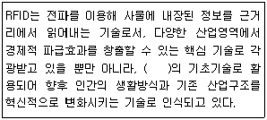
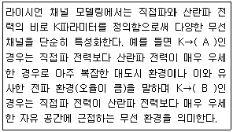
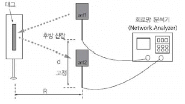
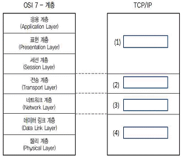
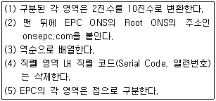
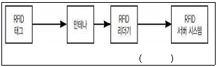
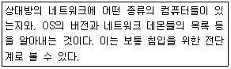
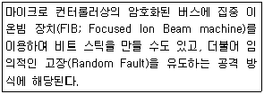
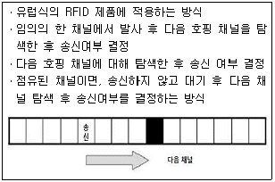

RFID-GL (2012-12-28 기출문제)
1과목: RFID 시스템 개요
1. 다음은 RFID에 대한 설명이다. 괄호 안에 들어갈 적절한 단어로 옳은 것은?

- 보안ㆍ군사 산업
- 모바일 네트워크
- 유비쿼터스
- 물류 혁신
(정답률: 89%)

2. 다음 중 RFID 태그(Tag)와 같은 개념으로 사용되는 용어는 무엇인가?
- 프로토콜(Protocol)
- 인터로게이터(Interrogator)
- 트랜스폰더(Transponder)
- 소켓(Socket)
(정답률: 91%)
3. 다음 중 능동형 태그에 대한 설명으로 가장 옳지 않은 것은?
- 태그 내에 배터리가 내장되어 있다.
- 태그에서 전파를 방출하므로 리더가 멀리 떨어져 있어도 인식이 가능하다.
- 태그의 가격이 수동형 태그에 비하여 비싸다.
- 반영구적인 사용이 가능하다.
(정답률: 77%)
4. 다음 중 RFID의 기술에 대한 설명으로 옳지 않은 것은?
- 루프코일/안테나로 데이터 송수신이 이루어지는 형태는 자기장에 반응 동작하는 방식이다.
- 전자장에 반응하는 수동형 시스템은 레이더의 원리인 후방산란 방식이 사용된다.
- 일반적인 수동형 시스템에서 자기장 방식이 전자장 방식에 비해 원거리에 사용된다.
- 자기장 반응 방식은 주로 125/135KHz 대역과 13.56MHz 대역에서 사용된다.
(정답률: 56%)
2과목: RFID 기술
5. RFID 시스템 운용시 인식 영역을 달라지게 할 수 있는 물리적 조건으로 가장 적절하지 않은 것은?
- RFID 시스템에 적용되는 주파수
- 태그의 크기와 안테나
- 태그를 부착하는 물체의 크기와 위치
- RFID 미들웨어와 호스트 애플리케이션간의 인터페이스 표준 방식
(정답률: 36%)
6. 휴대용 UHF 리더기의 안테나 출력이 20dBm 이라고 할 때 mW로 환산한 값은?
- 100mW
- 200mW
- 400mW
- 1000mW
(정답률: 64%)
7. 다음 중 안테나 특성을 기술하는 파라미터와 가장 거리가 먼 것은?
- 공진 주파수
- 입력 임피던스
- 표피 두께
- 방사 패턴
(정답률: 72%)
8. 전자파의 편파에 대한 설명 중 옳지 않은 것은?
- UHF 대역의 RFID 태그와 리더는 일반적으로 원형 편파를 사용한다.
- RFID에서는 선형편파나 원형편파를 사용한다.
- 다이폴 안테나 이용시 리더와 태그의 안테나 편파 방향이 일치하는 것이 좋다.
- 원형편파는 수직과 수평편파를 이용해서 만들 수 있다.
(정답률: 27%)
9. RFID의 주파수에 대한 일반적인 설명으로 옳은 것은?
- 주파수가 높을수록 태그의 안테나 사이즈도 커진다.
- 주파수가 낮을수록 주변 환경영향에 둔감하다.
- 주파수와 데이터 전송률은 일반적으로 반비례 관계이다.
- 액체나 금속판에 대한 서로 다른 주파수의 투과 두께에는 차이가 없다.
(정답률: 46%)
10. 다음 중 UHF 대역(860~960MHz) RFID에서 사용한 인코딩 방법과 가장 거리가 먼 것은?
- PIE
- Manchester
- FM0
- NRZ
(정답률: 37%)
11. 다음 중 RF Carrier를 2개 사용하는 변조 방식은?
- FSK
- ASK
- PSK
- PR-ASK
(정답률: 56%)
12. 다음 중 리더와 태그간의 결합에 대한 설명으로 가장 적합한 것은?
- 근거리장 결합은 안테나를 통한 방사 결합을 의미한다.
- HF 대역에서의 전력 전송은 리더와 태그의 인덕터간 유도 결합에 의해 가능하다.
- UHF 대역에서는 후방산란변조를 통해 리더에서 태그로 전력을 전송한다.
- 원거리장 결합은 일반적으로 저주파 RFID 시스템에 적용된다.
(정답률: 35%)
13. 다음 중 칩리스 태그의 특징에 대한 설명으로 가장 거리가 먼 것은?
- 대체로 저가이다.
- 저용량의 반도체 메모리 갖는다.
- 표면탄성파(SAW) 원리를 이용하는 방식이 있다.
- 쉽게 부서지지 않고 스파크나 전기적인 쇼크에 강하다.
(정답률: 37%)
14. 수동형 태그의 인식 거리에 영향을 주는 요소로 가장 거리가 먼 것은?
- 태그의 소비전력
- 태그 안테나의 이득
- 주파수 파장
- 태그 칩 내의 공급 전압
(정답률: 23%)
15. 최대 인식 거리 1m인 수동형 태그에서 태그의 안테나의 이득과 태그의 소비 전력이 각각 2배 증가하였을 경우 바뀐 환경에서 태그의 이론적인 인식거리는 어떻게 변하는가?
- 1m
- 2m
- 1/2m
- √2m
(정답률: 44%)
16. 대부분의 태그에서 사용하는 메모리로 전원이 없이도 데이터를 유지할 수 있는 메모리는 무엇인가?
- EEPROM
- SRAM
- DRAM
- ROM
(정답률: 54%)
17. 다음 중 UHF 대역 태그 칩 디지털 부분의 구성 요소로만 짝지어진 것은 무엇인가?
- 오류정정회로, 유한상태머신
- 명령 디코더, 전압체배기
- 메모리 인터페이스 제어기, 복조기
- 슬롯 카운터, 전압제어회로
(정답률: 36%)
18. 다음 중 UHF대역 수동형 리더에 대한 설명으로 가장 거리가 먼 것은?
- 태그의 데이터를 읽거나, 태그 데이터를 쓰는 기능을 한다.
- 수동형 태그에 원격으로 전력을 공급한다.
- 태그로부터 정보를 수신하는 동시에 태그에 전력을 공급하기 위해 진행파를 송신한다.
- 시변 전류가 인가되면 전장과 자장을 동반하는 파동을 발생시킨다.
(정답률: 53%)
19. 다음 중 리더의 구성요소에 대한 설명으로 옳지 않은 것은?
- 송신부는 태그에 전달할 고주파 신호를 발생하는 발진기 기능을 한다.
- 수신부는 변조된 고주파 신호에서 기저대역 정보를 추출하는 복조기 기능을 한다.
- 수신부는 리더의 기능을 제어한다.
- 송신부는 태그와의 통신을 위해 고주파 신호의 주파수, 위상, 진폭을 변화시키는 변조기 기능을 한다.
(정답률: 45%)
20. 다음 중 리더 인터페이스에 대한 설명으로 옳지 않은 것은?
- 리더와 외부의 인터페이스는 용도에 따라 통신, 안테나, 테스트 포트 등으로 분류 할 수 있다.
- 테스트 포트는 리더의 정상 동작 여부 검증, 또는 소프트웨어의 수정을 위한 용도로 사용된다.
- 모노스태틱 리더의 안테나는 송신용 전용으로 사용한다.
- 바이스태틱 리더는 송수신 안테나를 구분해서 사용한다.
(정답률: 68%)
21. 다음 중 리더 성능인 DC 오프셋에 대한 설명으로 옳지 않은 것은?
- 바이스태틱 구조는 모노스태틱 구조에 비해 일반적으로 보다 나은 감도를 가진다.
- 순방향 링크가 인식거리의 주요 제약 조건으로 동작하고 수신 감도에 크게 좌우되지 않는다.
- 안테나 혹은 안테나 주변의 고정된 장애물이나 시스템 내부 등으로부터 반사된 모든 신호는 국부 발진기 신호와 혼합되어 직류 신호(0의 주파수 신호)를 형성한다.
- 수동형 태그를 읽는 RFID 리더는 일반적으로 호모다인(homodyne) 또는 직접 변환(direct conversion) 구조를 취하기 때문에 수신 신호는 국부 발진기의 반송파와 다른 주파수에 위치한다.
(정답률: 37%)
22. 다음 중 리더 송신기에 대한 설명으로 옳은 것은?
- 순방향 링크 동작에서는 능동형 태그를 동작시키기 위한 전력을 제공한다.
- 기저 대역 신호를 변조하여 태그에 명령과 데이터를 전달한다.
- 역방향 링크 동작에서는 태그가 전방 산란하여 정보를 공급할 수 있도록 진행파 신호의 전력을 전송하여야 한다.
- RFID 송신기는 다른 무선기기, 특히 다른 RFID 리더가 존재할 때는 훨씬 단순해진다.
(정답률: 27%)
23. 다음 중 리더 송신기의 특성이 아닌 것은?
- 정확성(accuracy)
- 효율성(efficiency)
- 낮은 불요파 방사(low spurious emission)
- 다이나믹 레인지(dynamic range)
(정답률: 63%)
24. 다음 설명 중 (A)와 (B)에 들어갈 값으로 맞게 짝지어진 것은 무엇인가?

- (A) : 0, (B) : ∞
- (A) : ∞, (B) : 0
- (A) : 1, (B) : 0
- (A) : 0, (B) : 1
(정답률: 66%)
25. 다음 그림은 태그의 무엇을 측정하기 위한 방법인가?

- 인식거리
- 임피던스
- 무선환경
- 레이더 탐지 면적(RSC)
(정답률: 62%)
26. 다이폴 안테나에서 주파수가 2.4GHz라고 가정하였을 때 태그 안테나가 유도성 부하를 가지기 위한 최소의 길이는? (단, 전파 속도 V = 3 × 108 m/s 라 가정)
- 3.25cm
- 4.25cm
- 5.25cm
- 6.25cm
(정답률: 60%)
27. 다음 중 리더 수신기에 대한 설명으로 가장 거리가 먼 것은?
- 잡음 지수 측면에서는 RFID 수신기는 매우 완화된 스펙을 갖는다.
- 수동 태그는 순방향 링크에 많은 전력이 필요한 반면 상대적으로 높은 수신 감도를 요구하지는 않는다.
- 복조와 디코딩에 관련된 문제는 에러 정정 코드나 위상과 진폭이 모두 관계되는 변조 방식을 이용하는 더욱 복잡한 무선 시스템에 비하여 훨씬 단순하다.
- 간섭 신호가 태그 신호와 동일 또는 인접한 무선 채널에 존재하기 때문에 수신기의 RF 부분에서 필터링하는 것이 매우 쉽다.
(정답률: 35%)
28. 대상물이 인식 영역에 진입하는 것을 감지하여 리더기가 동작하도록 하는 장치로 가장 거리가 먼 것은?
- 영상감지센서
- 상품자동선별기
- 트리거용 장치
- 근접센서
(정답률: 40%)
29. 다음 중 라벨 부착기에 대한 설명이 잘못된 것은 무엇인가?
- 공기압 라벨 부착기는 적외선 또는 초음파와 같은 근접센서를 이용하여 물체와의 거리에 맞추어 제품이나 패키징에 접촉하여 라벨을 부착한다.
- Wipe-on 라벨 부착기는 대부분 컨베이어 또는 생산라인의 일부분으로 이용되는데, 일정한 속도로 이동하는 제품 또는 패키징에 라벨을 부착하며 이를 위해 속도를 줄이지 않는다.
- 휴대용 라벨 부착기는 번외 처리와 소량의 응용시스템에 유용하다.
- 프린터 일체형 라벨 부착기는 프린터와 라벨 부착기가 일체형으로 구성되어, RFID 태그에 코딩하고 라벨을 프린트한 후 자동적으로 제품 또는 패키징에 부착한다.
(정답률: 29%)
30. RFID 리더와 상위 시스템을 연결하는 대표적인 방법중 하나인 RS-232C 통신에 대한 다음 설명중 가장 적절한 것은?
- 한 번에 여러 데이터 비트를 전송하는 대표적인 병렬(parallel) 통신 방식이다.
- 데이터 패킷을 목적지까지 전달하고, 그 과정에서의 복잡한 장치 간 경로 배정 및 중계 기능을 제공하기 위한 기능적, 절차적 수단을 제공한다.
- 전기적 특성, 기계적 특성, 인터페이스 회로의 기능 등을 규정하고 있다.
- 양 끝단의 시스템이 통신하기 위한 세션의 연결과 조정을 담당하며 통신을 관리하기 위한 방법을 제공한다.
(정답률: 34%)
31. 아래의 그림은 RFID 리더의 통신에서 사용하는 통신 프로토콜에 대한 설명으로 OSI 7 계층 모델과 TCP/IP 관계를 보이고 있다. 아래 그림의 우측에 있는 TCP/IP 프로토콜의 (1),(2),(3),(4)의 빈칸에 들어갈 용어들을 순서대로 나열한 것은?

- 응용계층(Application Layer) - 전송계층(Transport Layer) - 네트워크 액세스 계층(Network Access Layer) - 인터넷계층(Internet Layer)
- 응용계층(Application Layer) - 인터넷계층(Internet Layer) - 전송계층(Transport Layer) - 네트워크 액세스 계층(Network Access Layer)
- 응용계층(Application Layer) - 네트워크 액세스 계층(Network Access Layer)- 전송계층(Transport Layer) - 인터넷계층(Internet Layer)
- 응용계층(Application Layer) - 전송계층(Transport Layer) - 인터넷계층(Internet Layer) - 네트워크 액세스 계층(Network Access Layer)
(정답률: 46%)
32. 다음 중 ALE API에 대한 설명으로 가장 거리가 먼 것은?
- ALE API는 클라이언트로 서버가 리포트를 제공하는 방식에 따라 동기 방식(Immediate)과 비동기 방식 (Recurring)으로 구분되며 클라이언트가 요청할때만 주기적으로 리포트를 제공하는 방식이 비동기 방식이다.
- ALE 표준 규격에서는 ALE 서버와 클라이언트 간에 ECSpec을 정의, 등록, 실행, 제어하기 위한 프로그램 인터페이스를 명시하고 있는데 이를 ALE API라고 한다.
- ALE 실행 환경은 RFID 리더, ALE 서버, 클라이언트 응용 그리고 사용자(관리자)로 구성된다.
- ALE 1.1의 주요 특징으로 RFID 태그에 데이터를 쓰기 위한 Writing API와 정보보호를 위한 Access Control API가 추가되었다.
(정답률: 40%)
33. RFID 리더 API에서 주로 설정되는 파라미터로 사용되는 값으로 소켓을 이용하여 상대방 세션과 IP 패킷을 주고받기 위해서 필요한 정보가 아닌 것은?
- 통신에 사용할 데이터링크 계층
- 상대방의 IP 주소 및 포트 번호
- 자신의 IP 주소
- 자신의 포트 번호
(정답률: 50%)
34. RFID 미들웨어의 인증을 주관하는 단체는?
- TTA
- EPCglobal
- IETF
- IEEE
(정답률: 61%)
35. 다음 중 RFID 미들웨어의 역할로 가장 거리가 먼 것은?
- 파트너간의 RFID 정보를 공유하는 역할
- 이기종 RFID 환경에서 발생하는 대량의 데이터를 수집, 필터링하는 역할
- 다수의 리더기를 관리하는 역할
- EPCIS 주소를 검색하는 역할
(정답률: 55%)
36. EPCglobal의 ALE 규격은 수동형 RFID를 기반으로 만들었기 때문에 적용에 한계가 있어 ISO/IEC JTC1 SC31에서 새로운 미들웨어 표준규격의 표준화 작업을 진행하고 있다. 다음 중 새롭게 진행되고 있는 RFID 미들웨어 표준은?
- ISO/IEC 24791 SSI
- ISO/IEC 24730 RTLS
- ISO/IEC 18000-6C
- ISO/IEC 18185 e-seal
(정답률: 45%)
37. EPCIS framework의 기본 원칙으로 가장 적절한 것은?
- 크로스계층구조 설계, 확장성, 모듈화
- 계층구조설계, 확장성, 모듈화
- 통합성, 확장성, 모듈화
- 추상화, 계층구조설계, 확장성
(정답률: 47%)
38. EPCIS 인터페이스를 통해 EPC 데이터가 기업 레벨의 시스템으로 전달되는데, 다음 중 EPCIS의 세 가지 인터페이스의 구성요소로 가장 적절한 것은?
- EPCIS Capture Interface, EPCIS Accessing Application, EPCIS Query Callback Interface
- EPCIS Accessing Application, EPCIS Query Control Interface, EPCIS Query Callback Interface
- EPCIS Query Control Interface, EPCIS Capture Interface, EPCIS Semantic Interface
- EPCIS Capture Interface, EPCIS Query Control Interface, EPCIS Query Callback Interface
(정답률: 59%)
39. EPC 코드가 EPC ONS에 질의되기 위해서는 FQDN으로 변환되어야 하는데 아래 상자내의 항목들을 변환순서대로 바르게 나열한 것은?

- (5)-(4)-(1)-(3)-(2)
- (4)-(5)-(1)-(2)-(3)
- (1)-(3)-(2)-(5)-(4)
- (5)-(1)-(4)-(3)-(2)
(정답률: 65%)
40. RFID 네트워크를 통해 객체 정보를 획득하는 이유에 해당하는 것은?
- RFID 태그의 메모리사이즈가 충분하지는 않지만 획득된 객체 정보를 기록하기에는 여유가 있다.
- RFID 태그가 부착된 객체가 이동할 경우 이에 대한 정보가 태그에 기록되기 위해서는 태그내에 재기록(Rewrite)이 가능해야 하기에 네트워크를 통해 외부 서버에 객체 이동정보 등이 기록될 필요는 없다.
- 객체 정보의 변동이 있을 경우 실시간으로 기록될 수 있어야 한다.
- 인터넷 웹 브라우저에 도메인 이름을 입력하기 위해서이다.
(정답률: 42%)
41. 다음 중 EPCIS 추상화 데이터 모델의 구성요소가 아닌 것은?
- 이벤트 데이터, 이벤트, 이벤트 타입
- 이벤트 필드, 마스터 데이터, 마스터 데이터 속성
- 클래스, 클래스 타입, 클래스 속성
- 어휘, 어휘 요소
(정답률: 46%)
42. 다음의 EPC ONS 기반기술에 대한 설명 중 잘못된 것은?
- DNS는 도메인 이름에 대한 IP 주소를 저장하여 검색 및 반환하는 역할을 수행하는데, 빠른 입출력을 그 특징으로 한다.
- DNS에 질의/응답 시에는 표준화된 DNS Message를 사용한다.
- EPC ONS는 인터넷에 이용되어 오랜 기간 그 안정성과 효율성이 입증된 시스템인 DNS를 기반으로 구현 되어 있다.
- DNS Message Packet은 53번 포트를 통해 TCP(Transmission Control Protocol)통신을 하므로 응답 시간이 짧다.
(정답률: 44%)
3과목: 정보보호
43. 다음 중 RFID 시스템의 정보의 특징에 대한 설명으로 잘못된 것은?
- RFID 정보 접근 매개 요소는 태그식별 코드 이다.
- RFID 매개요소는 사용자가 변경 가능 하다.
- RFID 정보 생성주체는 일반적으로 제조업체이다.
- RFID 정보는 개인화된 정보로 생성 및 변화가 가능 하다.
(정답률: 27%)
44. RFID 기술과 구현은 공정정보규정(Fair Information Practices)의 원칙을 따라야 한다. 다음 중 공정정보 규정 내용 설명으로 옳은 것은?
- 구매자는 태그가 상품에 포함되어 있는 경우 그 사실을 알 권리가 있으나, 이러한 장비들의 기술적 세부사항에 대한 알 권리는 없다.
- RFID 사용자은 태그와 리더가 사용되는 목적은 공지할 필요가 없다.
- RFID 정보는 필요한 경우에만 수집되도록 제한되어야 한다.
- RFID 사용자는 기술의 구현 및 관련 데이터에 관하여 책임을 갖지만 법적 책임은 없다.
(정답률: 32%)
45. 다음 국가별 RFID 프라이버시 보호 노력 중 잘못된 것은?
- 미국 - RFID 보호 입법화 추진
- 한국 . RFID 가이드라인 제정
- 유럽 . 민간/공공, 온/오프라인을 통합 규제
- 일본 . RFID 법제도 시행
(정답률: 48%)
46. 다음 중 RFID 프라이버시 보호 가이드라인 표준안의 주요내용이 아닌 것은?
- 개인정보 누설 방지
- RFID 리더기 설치의 표시
- 프라이버시 보호 영향 평가 실시
- RFID 태그의 동물 이식 금지
(정답률: 65%)
47. 다음 RFID 시스템 구성 요소의 ( )부분에서 침해를 유발하는 공격기술이 아닌 것은?

- 버퍼오버플로
- 스캐닝
- 스푸핑
- 재전송 공격
(정답률: 40%)
48. 다음이 설명하는 공격 방식은 무엇인가?

- 스푸핑(Spoofing)
- 스니핑(Sniffing)
- 스캐닝(Scanning)
- 트래픽 분석(Traffic Analysis)
(정답률: 56%)
49. 다음 설명에 해당하는 RFID시스템 공격 방식이 아닌 것은?

- 프로빙(Probing) 공격
- 게이트 파괴(Gate destruction)
- ROM Overwrite 공격
- EEPROM 변형 공격
(정답률: 41%)
50. 다음 중 주요 보안 취약점에 해당되지 않는 것은 무엇인가?
- 전방향 프라이버시
- 위치 프라이버시 문제
- 정보 유출
- 가용성
(정답률: 62%)
51. 다음 중 태그의 기능을 유지하면서 사용자가 원하지 않는 리더기와 자신의 태그 사이의 통신을 막는 주요 물리적 해결방안 중의 하나로 일반 장소에 설치되어 있는 RFID 리더를 통한 정보의 보호를 대신하여 소비자들이 직접 자신만의 프라이버시 보호를 위한 장비를 들고 다니면서 통신을 차단하는 방법은 무엇인가?
- 프록싱(Proxying) 접근
- 태그 차폐(Shield the Tag)
- 블로커 태그(Blocker Tag)
- 능동형 전파 방해(Active Jamming)
(정답률: 45%)
52. 다음 중 정책 기반 프라이버시 보호 시스템 구성요소와 가장 거리가 먼 것은?
- mRFID 응용시스템
- DNS 서버
- mRFID 리더
- RPS(RFID user Privacy management Service) 서버
(정답률: 47%)
53. 다음 태그 기능 정지 방안에 대한 내용 중 잘못된 것은 무엇인가?
- EPC를 위한 저가형 태그에 프라이버시 문제를 보완하기 위해 사용자가 제품을 구매하는 순간 리더의 ‘Kill(무효화)’ 명령을 통하여 제품에 부착된 태그가 더 이상 동작하지 않도록 하는 방안이다.
- Kill 명령어 기법은 태그 재사용이 불가하므로 그 응용성이 상당히 제한되므로 실생활에 유익하고 편리한 서비스를 제공할 수 없다.
- ‘Kill’명령의 단점을 보완하기 위해 사용자의 태그의 기능을 잠시 동안 정지하였다가 안전한 장소에서 다시 동작하도록 하는 명령으로 Sleep/Wake 명령이 있다.
- Sleep/Wake 명령어 기법은 사용자가 키 관리를 비롯하여 각 태그의 동작을 일일이 관리할 필요가 없어 사용하기 편리하다.
(정답률: 53%)
4과목: 도입절차
54. 다음 중 RFID 도입시 인식거리 및 데이터 처리의 고려사항으로 가장 거리가 먼 것은?
- 해당 개체정보를 인식할 수 있는 주파수 대역
- 원하는 정보만을 취득할 수 있는 인식 거리 조정
- 인식 대상개체의 동시인식 가능 범위 확인
- 이동 중인 개체 식별은 능동형 시스템 적용
(정답률: 41%)
55. 다음 중 RFID 리더 선정 시 고려사항이 아닌 것은?
- 밀집모드(Dense Reader Mode)
- 온도/습도등 가혹환경
- 다중 프로토콜
- 경광등의 규격
(정답률: 41%)
56. RFID 도입시 태그 선정 및 부착방법은 시스템 성능에 큰 영향을 미치는 중요한 요소이다. 다음 중 RFID 태그의 적용업무에 따른 주요 고려 사항이 아닌 것은?
- 저장할 정보의 용량
- 이동 속도
- 주기억 장치
- 읽기/쓰기 지원
(정답률: 60%)
57. 다음 중 각 RFID 리더기에서 읽은 태그 정보를 필터링하여 SOAP/HTTP 응용인터페이스를 통해 정보전송을 수행하는 시스템으로 가장 적절한 것은?
- RFID 에이전트 시스템
- RFID 웹서비스 시스템
- RFID 인프라 시스템
- RFID 응용 시스템
(정답률: 49%)
58. 다음 RFID 시스템의 고려 사항 중 설정된 비즈니스 모델과 요구사항을 토대로 RFID 시스템을 구축하고 운영하기 위한 기반시설을 설계하는 단계는?
- 비즈니스 및 요구사항 모델링
- 아키텍쳐 및 디자인
- 인프라 유지보수 설계
- 개발 및 측정
(정답률: 61%)
59. RFID 도입 목적 및 범위를 설정함에 있어 목표를 분류할 때 향상된 재고 가시성과 감시 능력, 도난 손실 비용의 감소, 향상된 의사 결정 등은 어느 목표에 해당하는가?
- 단기적이고 직접적인 목표
- 단기적이고 간접적인 목표
- 장기적이고 직접적인 목표
- 장기적이고 간접적인 목표
(정답률: 60%)
60. RFID 시스템 도입 검증 단계에서는 주변 환경에 따른 시스템의 내구성을 검증할 필요가 있다. 다음 중 내구성 검증에 속하지 않는 검증 내용은?
- 태그나 시스템의 적용위치에 따른 동작온도 검증
- 리더 설치장소 주변의 전파 잡음원이나 전파환경 검사
- 눈, 비 등 RF 특성을 변화시키는 상황 검증
- 작업 환경에 따른 시스템 파손 상황 대비
(정답률: 36%)
61. RFID 도입을 위한 예산계획 수립 시 고려해야 할 비용 항목에 속하지 않는 것은?
- 장비 구입비용
- 시스템 운용환경 구축비용
- 전파 사용비용
- 자료 입력비용
(정답률: 32%)
62. RFID 시스템 도입 검증시 실 상황에 대한 인식률을 측정할 필요가 있다. 다음 중 측정 항목과 측정 목적이 틀리게 짝지어 진 것은?
- 대상물 태그 부착 방법 측정 - 최적의 태그 부착 위치 및 방법 결정
- 태그 이동 속도 측정 - 허용 가능한 최고 이동 속도 측정
- 대상물 적재방법 비교 측정 - 최적의 적재방법 모색
- 기후에 따른 측정 - 최소 방수/방진 등급을 결정
(정답률: 57%)
63. RFID 시스템이 구현되고 나면 측정을 실시하게 되며, 이를 위해 측정조직의 구성이 필요하다. 다음 중 반드시 포함되어야 하고 가장 중요한 구성원은?
- 품질 보증팀
- 현업 사용자
- 장비 시험요원
- 각 시스템 개발자
(정답률: 27%)
64. RFID 투자성과 분석평가방법 중 정성적 평가는 시스템이 적용되는 단계의 정성적 항목도출을 어떻게 하는가가 관건이 될 것이다. 다음 중 정성적 항목 도출에 중요하지 않은 것은?
- 시스템 도입을 통해 얻고자 하는 부분
- 계량화 되지 않더라도 충분히 내용을 전달할 수 있는 항목
- 기업의 전략목표, 미션과 부합되는 항목
- 기술적 관점에서의 효과 항목
(정답률: 24%)
5과목: RFID 표준 및 법제도
65. 다음 중 RFID기술로 국내에서 사용 가능한 표준 주파수는?
- 110KHz
- 13.56MHz
- 445MHz
- 2.8GHz
(정답률: 63%)
66. 다중 태그 인식이 가능하여 유통 및 물류 분야에서 널리 사용되는 표준 규격은?
- ISO/IEC 18000-2
- ISO/IEC 18000-3
- ISO/IEC 18000-4
- ISO/IEC 18000-6
(정답률: 75%)
67. RFID 기술을 주파수 대역별로 나누는 이유로 가장 적절한 것은?
- 제조상의 원가 절감을 위해
- 상호 운용성 확보
- 전파특성에 따른 시스템 구성과 응용이 달라지기 때문
- 다양한 코드체계를 적용하기 위해
(정답률: 59%)
68. RFID는 동일 장소에서 여러 시스템이 운용될 수 있는데 이때 다른 시스템에게 통신할 수 있는 기회를 주기 위해 송신 휴지기를 사용하는 채널공유방법은 다음 중 어느 것인가?
- 밀집리더모드(DRM)
- 듀티 사이클
- 주파수 호핑
- 항 재밍(Anti-Jamming)
(정답률: 66%)
69. 우리나라와 같이 좁은 주파수 대역을 사용하는 지역에 적합한 UHF 대역 RFID의 기술기준(채널 엑세스) 방식은?
- ASK
- PSK
- LBT
- OOK
(정답률: 46%)
70. RFID 표준을 주파수 대역별로 구분하는 경우는 주파수 대역별 특성 때문이다. 다음 중 주파수 대역별 특성의 설명으로 가장 거리가 먼 것은?
- 고주파의 경우 데이터 전송 속도를 높이기 용이하다.
- 고주파의 경우 외부 환경이나 잡음에 많은 영향을 받는다.
- 저주파의 경우 외부 환경이나 잡음에 영향을 덜 받는다.
- 저주파의 경우 태그의 사이즈를 줄일 수 있다.
(정답률: 47%)
71. UHF 860~960MHz 대역 표준인 ISO 18000-6에서는 각국의 출력제한 규정에 따라 선택적으로 사용할 수 있도록 정의하고 있는데 국내의 출력 제한은 얼마인가?
- EIRP 1W
- EIRP 2W
- EIRP 3W
- EIRP 4W
(정답률: 40%)
72. 다음에서 설명하고 있는 것은 어느 것인가?

- CSMA/CA(Carrier Sense Multiple Access/Collision Avoidance)
- AFH(Adaptive Frequency Hopping) 2
- FHSS(Frequency Hopping Spread Spectrum)
- LBT(Listen Before Talk)
(정답률: 29%)
73. 다음 중 EPC 코드체계의 설명으로 잘못된 것은?
- GRAI(Global Returnable Asset Identifier) : 기존의 EAN, UCC 표준에 정의되어 있는 체계로 유일한 식별 번호가 가능한 체계
- GID(General Identifier) : 기존의 EAN, UCC 표준에 정의되어 있는 체계로 개개의 물건에 식별 번호가 부여
- SSCC(Serial Shipping Container Code) : 기존의 EAN, UCC 표준에 정의되어 있으며 GTIN과 달리 개개의 물체에게 식별번호를 부여
- SGTIN (Serialized Global Trade Identification Number) : EAN, UCC에서 제정된 GTIN 코드를 기반으로 개개의 물체에 유일한 식별자를 할당하기 위해 제안된 코드체계
(정답률: 44%)
74. 다음 중 EPC 클래스의 명세와 특징이 잘못 짝지어진 것은?
- 클래스0/1 : 수동형 읽기 전용, 수동형 읽기/쓰기, Gen2
- 클래스2 : 부가적인 기능을 보유한 수동형 태그
- 클래스4 : 반능동형(Semi-Active)
- 클래스5 : 각 클래스의 기능을 포함하고 배터리를 가진 능동형 태그
(정답률: 63%)
75. 다음 중 모바일 RFID 서비스를 위한 기본 시스템이 아닌 것은?
- 이동통신망
- ODS
- 콘텐츠 서버
- 서비스 브로커
(정답률: 63%)
76. 다음 중 모바일 RFID와 유사한 기능을 수행하는 대안 기술로 13.56MHz 기반의 무선통신 기술은?
- NFC(Near Field Communication)
- UWB(Ultra Wide Band)
- Bluetooth
- WiFi
(정답률: 54%)
77. 다음 중 RFID 리더기 탑재 휴대폰이 보편적으로 사용 되고 일반 고객에 맞는 Killer application이 제공될 때 가능한 모바일 RFID 서비스 모델은?
- B2B
- B2G
- B2C
- B2B2C
(정답률: 46%)
78. 다음 중 ISO/IEC 18000-C 태그에 저장되는 식별자의 종류가 아닌 것은?
- TID(Tag Identifier)
- OID(Object Identifier)
- UII(Unique Item Identifier)
- UID(User Identifier)
(정답률: 31%)
79. 다음 중 ISO/IEC 18000-6C에 ISO 코드를 저장하는 경우, UII 영역에 기입되는 정보로 저장된 코드의 종류를 판별할 수 있도록 하는 정보는 무엇인가?
- DSFID(Data Storage Format Identifier)
- TID(Tag Identifier)
- Access Password
- OID(Object Identifier)
(정답률: 34%)
80. 다음 중 모바일 RFID 서비스 코드 체계로 개발되지 않은 것은?
- mCode
- micro-mCode
- mini-mCode
- macro-mCode
(정답률: 60%)